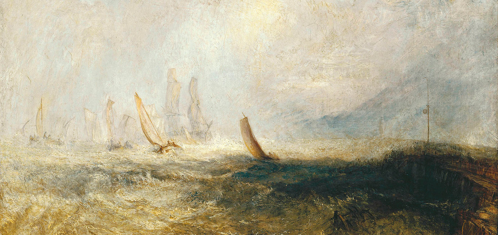

Turner i jego mistrzowie
Po Londynie (Tate Britain) i Paryżu (Grand Palais) wielka wystawa prac Josepha Mallorda Williama Turnera zagości w madryckim Prado.
Ekspozycja ukazuje sposób, w jaki Turner tworzył swe dzieła, zapatrzony w prace wielkich poprzedników, jak Rembrandt, Rubens czy Claude Lorraine, których malowidła z uwagą studiował. Dowodzi również jego zainteresowania sztuką współczesnych mu artystów.
Turner and the Masters
Museo del Prado, od 22 czerwca do 19 września 2010 roku.